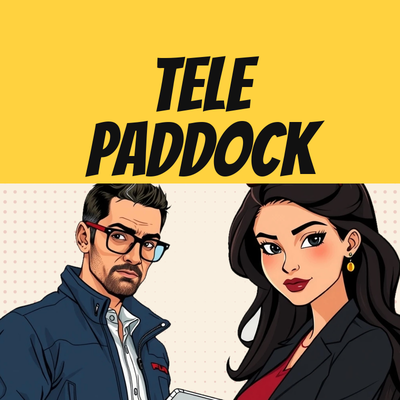

Tele Paddock
Os bastidores da Fórmula 1 em quadrinhos. O Estrategista traz os dados da telemetria; a Insider traz o que se fala no paddock. Notícias reais da imprensa do mundo todo, debate sem filtro e a sua opinião nos comentários.
- ▶ YouTube — episódios completos
- 🎧 Podcast (RSS para qualquer aplicativo)
- 🎵 TikTok
- 🧵 Threads
- 🦋 Bluesky
Os apresentadores são personagens fictícios com vozes e imagens geradas por inteligência artificial. Os fatos vêm de notícias publicadas e verificadas pela equipe antes de cada episódio.
Podcast independente, sem vínculo com a Fórmula 1, a FIA, as equipes ou os pilotos.